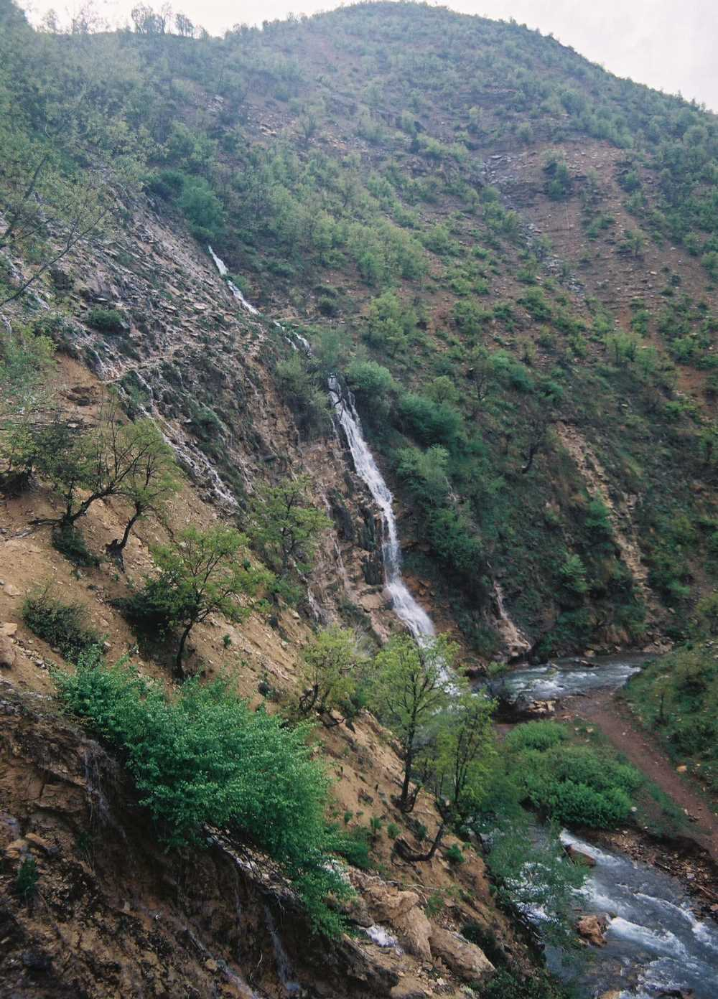

Tarihi Güzellikler
Munzur Vadisi
Doğu Anadolu'nun doğal güzellikleri arasında bulunan Munzur Vadisi, 1971 yılında milli park olarak ilan edilmiştir.
42.000 hektarlık bir alanı kapsayan Munzur Vadisi Milli Parkı, akarsu kaynakları, endemik bitki türleri, hayvan türleri ve bitki örtüsü bakımından oldukça zengindir. Tunceli-Ovacık arasında uzanan milli parkta dağ keçileri, av kuşlarından ur kekliği diğer hayvan türlerine göre sayıda fazladır. Bunun yanı sıra 1518 bitki örtüsü 227 çeşit endemik bitkisi bulunmaktadır. Endemik bitkilerinin bazılarını ise; çan çiçeği, Erzincan kirazı, bindebirdelik otu, Munzur kekliği, Munzur düğün çiçeği ve dağ çayı oluşturmaktadır.
Tunceli'ye yolunuz düşerse Munzur Vadisi Milli Parkı'nı mutlaka ziyaret etmenizi öneririz. Özellikle haziran ve eylül aylarında gitmenizi öneririz bölgeye. Milli parkta balık tutabilir, spor yapabilir ve piknik düzenleyebilirsiniz. Tabii bu muhteşem doğa kamp kurmanıza da izin veriyor. Munzur Vadisi Milli Parkı sizlere bol oksijenli bir havada eğlenceli vakitler sunacak.
Munzur Gözeleri
Tunceli'de, yöre halkı tarafından kutsal kabul edilen ve doğal güzelliğiyle, kar ve buzullardan beslenerek kayalardan akan sularıyla dikkati çeken Ovacık ilçesindeki Munzur Gözeleri, ziyaretçilerin ilgi odağı oldu.
Doğu Anadolu Bölgesi'nde gözde turizm alanlarından biri olan Ovacık ilçesindeki Munzur Gözeleri, kaya oyuklarından akan suları, irili ufaklı şelaleleri ve göletleriyle mayıs ile kasım ayları arasında yerli ve yabancı turistlerden ilgi görüyor.
Erzurum Kültür ve Tabiat Varlıklarını Koruma Kurulu Müdürlüğünce 2001 yılında birinci derece doğal sit alanı ilan edilen Munzur Gözeleri, Tunceli kent merkezine 80, Ovacık ilçe merkezine 17 kilometre uzaklıktaki Ziyaret köyünde yer alıyor.
Her yıl binlerce yerli ve yabancı turistin ziyaret ettiği Munzur Gözeleri, el değmemiş yemyeşil doğası, çevresini saran ihtişamlı Munzur Dağları ve bitki çeşitliliğiyle göz alıcı güzellikler sunuyor.
Buz gibi suları ve serinliğiyle ziyaretçilerine ferah bir ortam sunan Munzur Gözeleri'nin, efsaneye göre "Munzur" isimli çobanın elinde tuttuğu sütün yere dökülmesiyle ortaya çıktığına inanılıyor.
Yöre halkı tarafından kutsal mekan kabul edilen Munzur Gözeleri, Tunceli Valiliği Çevre ve Şehircilik İl Müdürlüğü, Fırat Kalkınma Ajansı ve Tunceli Barosunca ortaklaşa hazırlanan ve Erzurum Kültür ve Tabiat Varlıklarını Koruma Kurulunca onaylanan 8 milyon liralık yatırım projesiyle turizme kazandırılmaya hazırlanıyor.
Pertek Kalesi
İlçenin güneyinde, Murat Irmağı'nın kıyısındaki bir tepenin üzerinde inşa edilen Pertek Kalesi, bu bölgenin Keban Baraj Gölü suları altında kalması nedeniyle bugün bir ada üzerinde yer almaktadır. Osmanlılar zamanında onarım gören kalenin yapım tarihi kesin olarak bilinmemektedir. İç içe iki surdan oluşan kalede, surlar arasında yapı kalıntıları bulunmaktadır. Kalenin güney cephesindeki yontma taşların arasına kondurulmuş kırmızı sert tuğlalar ve serpiştirilmiş mavi çiniler vardır.
Dereova Şelalesi
Gelin Pınarı olarak ta bilinen şelale, il merkezine 46 km., Nazimiye ilçe merkezine 13 km. uzaklıkta, Dereova Köyündedir. 20 metre yükseklikten 3 kaynaktan yaygın bir şekilde dökülen sular, Pülümür Çayının kollarından biri olan ve çok derin bir vadide akan dereye karışmaktadır. Şelale hem çevresine serinlik katmakta, hem de yaz ve kış aylarında çok etkileyici ve farklı bir manzara sunmaktadır. Kışın şelale sularından oluşan sarkıt ve dikitler, bir buzul tabakası meydana getirmektedir. Şelalenin çevresi çok dik eğimli olup bodur meşe ormanları ile kaplıdır. Şelale ve çevresi doğal nitelikleriyle piknik, doğa yürüyüşü gibi günübirlik etkinlikler için önemli bir potansiyel taşımakla birlikte, yakın çevresinde turizme ve rekreasyona yönelik başka kaynakların olmaması, Dereova Şelalesinin turizm amaçlı olarak kullanımını kısıtlamaktadır.
